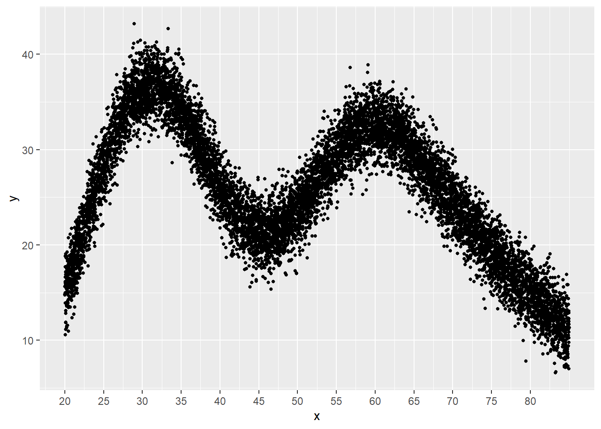
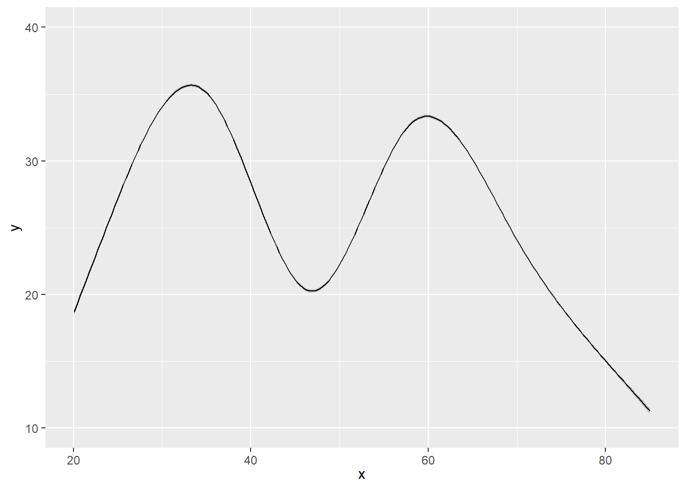
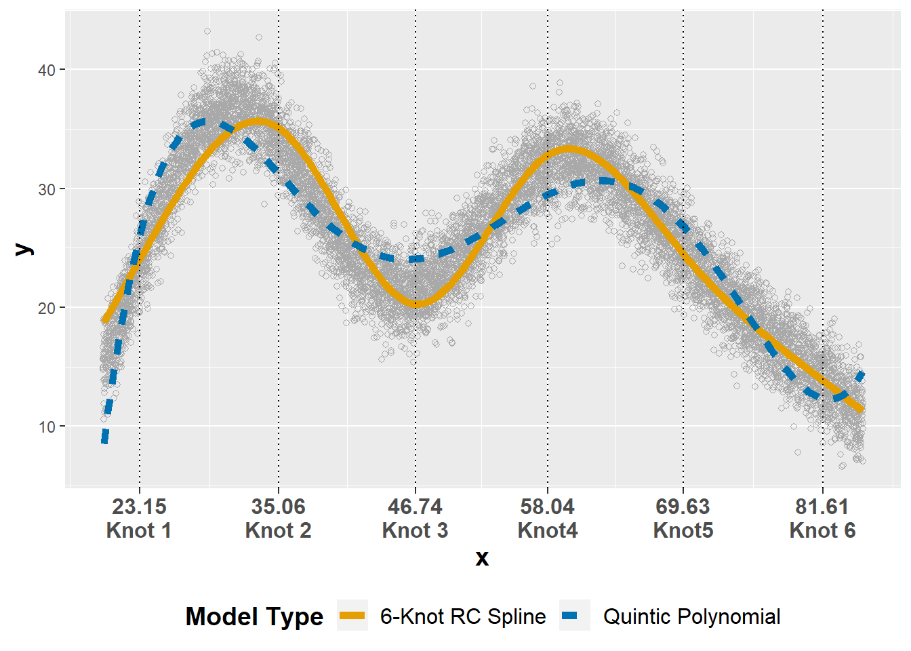

Using Restricted Cubic Splines in Structural Equation Models
Steven M. Brunwasser, Ph.D.
2022-11-19
knitr::opts_chunk$set(echo = TRUE,
warning = F,
message = F
)Overview
The purpose of this page is to demonstrate how restricted cubic splines (RCSs) to model nonlinear effects of predictors and nonlinear growth trajectories within a structural equation models (SEMs). First, I will show how to implement RCSs in ordinary least squares (OLS) and generalized least square (GLS) models. Then I will show how to implement RCSs in the context of SEMs.
** This is a work-in-progress. Please let me know if you spot any errors or have suggestions.**
Workspace Prep
Load require package. You may have to install these packages if you have never installed them before using the install.packages() function.
require( data.table )
require( ggplot2 )
require( mgcv )
require( rms )
require( Hmisc )
require( lavaan )
require( ERP )
require( MASS )
require( nlme )Demonstration in OLS regression
Prior to demonstrating the use of restricted cubic splines (RCSs) in structural equation models (SEM), we will use RCSs to model a nonlinear association in an ordinary least squares (OLS) model using the rms package. There are several helpful overviews for this package, including this one and this one.
First, let’s simulate data with a nonlinear association that does not follow a simple polynomial function. Goldfield and Wujciak-Jens provide helpful code to accomplish this. Please see their code and explanations for a detailed explanation of this approach.
As seen in the figure below, we simulated a response variable (\(y\)) whose values twice rise and fall rapidly as values of the predictor variable (\(x\)) increase. The predictor and response variables are housed in the dataframe mdata.
x <- c(20, 30, 40, 50, 60, 70, 80)
y <- c(15, 40, 25, 22, 35, 24, 15)
dd <- data.table(x = x, y = y)
dc <- copy(dd)
dc[, xend := (shift(x, type = "lead"))]
dc[, yend := (shift(y, type = "lead"))]
dc <- dc[ -.N]
dc[, id := .I]
interp_line <- function(x, y, xend, yend) {
slope <- (yend - y)/(xend - x)
b <- y - slope*x
newx <- seq(x, xend, length = 100)
newy <- newx*slope + b
data.table::data.table(x = newx, y = newy)
}
dx <- dc[, interp_line(x, y, xend, yend), keyby = id]
dx## id x y
## 1: 1 20.00000 15.00000
## 2: 1 20.10101 15.25253
## 3: 1 20.20202 15.50505
## 4: 1 20.30303 15.75758
## 5: 1 20.40404 16.01010
## ---
## 596: 6 79.59596 15.36364
## 597: 6 79.69697 15.27273
## 598: 6 79.79798 15.18182
## 599: 6 79.89899 15.09091
## 600: 6 80.00000 15.00000gam.fit <- gam(y ~ s(x, k = 7), data = dx)
dx[, ypred := predict(gam.fit)]
set.seed(123)
mdata <- data.table(x = runif(10000, 20, 85))
mdata$y <- predict(gam.fit, newdata = mdata) + rnorm(nrow(mdata),0, 2)
ggplot(data = mdata, aes(x = x, y = y)) +
geom_point(size = 1) +
scale_x_continuous( breaks = seq( 20, 80, 5 ) )
We start by storing key features of our data frame using the datadist() function in the rms package. This will make data summaries, predictions, and plotting more efficient. We then use the ols() function to run a regression model (stored in an object called ols.rcs5) in which the effect of \(x\) on \(y\) is modeled with a 6-knot RCS. RCSs require \(df=k-1\), where \(k\) is the number of knots. Therefore, the effect of \(x\) will require (\(df=5\)). Note, that the model code looks like a standard R regression model (y ~ x) except that the function rcs() is called for the \(x\) variable, telling the regression model to estimate a restricted cubic spline with 6 knots. We did not specify where to place the knots, so rms will use the default position values with the outer knots placed at the 0.10 and 0.90 quantiles and inner knots at equally spaced intervals in between.
dd <- datadist( mdata )
options( datadist = 'dd' )
ols.rcs5 <- ols( y ~ rcs( x, 6 ), data = mdata )The print() function shows indices of model fit (e.g., \(R^2\)), the model likelihood ratio test, and the \(k-1\) effects of \(x\), representing the model-implied rate of change in \(y\) for the different segments of \(x\) defined by the spline knots. We can see that the effects of \(x\) is easily different than 0 with alternating signs, capturing the rapid rises and descents of \(y\) over the range of \(x\) values.
print( ols.rcs5 )## Linear Regression Model
##
## ols(formula = y ~ rcs(x, 6), data = mdata)
##
## Model Likelihood Discrimination
## Ratio Test Indexes
## Obs 10000 LR chi2 21723.01 R2 0.886
## sigma2.3470 d.f. 5 R2 adj 0.886
## d.f. 9994 Pr(> chi2) 0.0000 g 7.489
##
## Residuals
##
## Min 1Q Median 3Q Max
## -8.40068 -1.58746 0.01796 1.60307 10.24834
##
##
## Coef S.E. t Pr(>|t|)
## Intercept -16.0106 0.3258 -49.14 <0.0001
## x 1.7298 0.0118 146.56 <0.0001
## x' -19.3577 0.1079 -179.47 <0.0001
## x'' 63.8037 0.3429 186.10 <0.0001
## x''' -89.2816 0.4995 -178.74 <0.0001
## x'''' 67.1363 0.5032 133.43 <0.0001
## We typically would like a statistical test for the overall effect of \(x\) with \(df=5\) in this case. The anova.rms() function provides an overall \(F\) test and a test of whether there is evidence of nonlinearity in the effect of \(x\) on \(y\).
anova( ols.rcs5 )## Analysis of Variance Response: y
##
## Factor d.f. Partial SS MS F P
## x 5 428209.95 85641.99026 15547.58 <.0001
## Nonlinear 4 310437.00 77609.25011 14089.31 <.0001
## REGRESSION 5 428209.95 85641.99026 15547.58 <.0001
## ERROR 9994 55050.75 5.50838Interpreting the 5 RCS coefficient for the effect of \(x\) on \(y\) is not straightforward. The best way to interpret the effect is visually. The Predict() function makes it simple to obtain model-predicted values of \(y\) against levels of \(x\). We can plot these predictions easily using ggplot2.
ggplot( Predict( ols.rcs5, x ) )
A commonly used alternative to RCSs for modeling nonlinear effects of continuous predictors are polynomial regressions, where we include values of \(x\) raised to higher powers (e.g., \(x^2\) for a quadratic effect). Let’s run a competing polynomial regression model that invests the same number of \(df\) as the RCS model we ran previously. We can use the pol() function to run a quintic polynomial regression with \(df=5\).
ols.pol5 <- ols( y ~ pol( x, 5 ), data = mdata )Now we can compare indices of model fit across the RCS and polynomial models. We can see that the \(R^2\) value is slightly larger in the RCS model compared to the quintic polynomial (0.89 vs. 0.84), though both do quite well in fitting the data.
ols.model <- c('6-Knot RCS','Quintic Polynomial')
ols.r2 <- c( ols.rcs5$stats[4], ols.pol5$stats[4] )
ols.fit <- data.frame( rbind( ols.model, ols.r2 ) )
ols.fit## R2 R2.1
## ols.model 6-Knot RCS Quintic Polynomial
## ols.r2 0.886084775638528 0.839633407999546We can better see how well the RCS and quintic polynomial models do in capturing the data by plotting the model predictions against the observed data. In the plot below, the vertical dashed lines show where the 5 RCS knots are located. Both do a good job fitting the data, but the RCS model better captures the drop and rise in \(y\) than the polynomial model. Also, the polynomial model prediction line curves up after the final knot on the far right end of the \(x\) distribution, whereas the RCS model constrains the line to be linear (straight) in the extremes of the distribution, beyond the first and last knots.
ols.rcs5.pred <- Predict( ols.rcs5, x )
ols.pol5.pred <- Predict( ols.pol5, x )
ols5.pred <- rbind( ols.rcs5.pred, ols.pol5.pred )
ols5.pred$model <- rep( c( '6-Knot RC Spline','Quintic Polynomial' ), each = 200 )
cbbPalette <- c("#E69F00","#0072B2" , "#56B4E9", "#009E73", "#F0E442", "#D55E00", "#CC79A7")
ols.pred5.plot <- ggplot( ) +
geom_point( data=mdata, aes( x=x, y=y ), color = 'darkgray', shape = 1 ) +
geom_line( data=ols5.pred, aes( x=x, y=yhat, group = model, colour=model, linetype = model ), size = 2 ) +
scale_color_manual( values=cbbPalette ) +
geom_vline( xintercept = rcspline.eval( mdata$x, nk = 6, knots.only = T ), linetype = 3 ) +
scale_x_continuous( breaks = rcspline.eval( mdata$x, nk = 6, knots.only = T ),
labels = c('23.15\nKnot 1','35.06\nKnot 2','46.74\nKnot 3','58.04\nKnot4','69.63\nKnot5','81.61\nKnot 6')) +
labs( colour='Model Type',
linetype ='Model Type') +
theme( axis.text.x = element_text( size = 12, face = 'bold'),
legend.title = element_text( size = 14, face = 'bold'),
legend.text = element_text( size = 12 ),
axis.title = element_text( size = 14, face = 'bold'),
legend.position = 'bottom' )
ols.pred5.plot
GLS Model with ERP Data
In this section, we’ll use data from the ERP package to model event-related potential (ERP) trajectories. I use these data because ERP amplitudes follow complex nonlinear trajectories. The impulsivity data from the ERP package is in the wide format with repeated measures of amplitude stored in multiple columns. Below, we reshape the data so that it is in the long format.
data(impulsivity)
impulsivity1 <- subset( impulsivity, !duplicated( impulsivity$Subject ) )
imp <- reshape( impulsivity1,
direction = 'long',
timevar = 'time',
varying = list( out = colnames( impulsivity )[5:505] ),
idvar = 'Subject',
times = seq( 0, 1000, 2 )
)Now that the data is in the appropriate format, we can model longitudinal trajectories using RCSs. As these are repeated measures data, we’ll use GLS models with a first-order autoregressive error structure (AR1) to capture non-independence in the errors over time. As we don’t know how many knots are needed for the RCSs to obtain a reasonable fir, below I fit GLS models modeling the effect of time with 8-, 7-, and 6-knot RCSs. We can compare the Akaike Information Criterion for each of these models to aid in model selection (Harrell 2015). The model with the smallest AIC value will be considered the one that best captures the effect of x on y without overfitting. The 7-knot RCS model (\(df=6\) invested in the time effect) is best according to the AIC.
ddimp <- datadist( imp )
options( datadist = ddimp )
# imp.rcs7 <- Gls( T_0 ~ rcs( time, 8 ),
# correlation = corAR1( form = ~time | Subject ),
# data = imp,
# x = T )
# save( imp.rcs7, file='imp.rcs7.RData' )
load( 'imp.rcs7.RData' )
# imp.rcs6 <- Gls( T_0 ~ rcs( time, 7 ),
# correlation = corAR1( form = ~time | Subject ),
# data = imp,
# x = T )
# save( imp.rcs6, file='imp.rcs6.RData' )
load( 'imp.rcs6.RData' )
# imp.rcs5 <- Gls( T_0 ~ rcs( time, 6 ),
# correlation = corAR1( form = ~time | Subject ),
# data = imp,
# x = T )
#
# save( imp.rcs5, file='imp.rcs5.RData' )
load( 'imp.rcs5.RData' )
imp.rcs7.aic <- AIC( imp.rcs7 )
imp.rcs6.aic <- AIC( imp.rcs6 )
imp.rcs5.aic <- AIC( imp.rcs5 )
data.frame( AIC = c(imp.rcs7.aic, imp.rcs6.aic, imp.rcs5.aic ),
DF = c( 7, 6, 5 ) )## AIC DF
## 1 64298.24 7
## 2 64146.42 6
## 3 64810.86 5Evaluate the 6-knot RCS model. The time effects are all non-zero and the coefficients change sign indicating change in direction of the regression slope.
print( imp.rcs6 )## Generalized Least Squares Fit by REML
##
## Gls(model = T_0 ~ rcs(time, 7), data = imp, correlation = corAR1(form = ~time |
## Subject), x = T)
##
##
## Obs12024 Log-restricted-likelihood-32064.21
## Clusters24 Model d.f. 6
## g 3.455 sigma 3.4750
## d.f. 12017
##
## Coef S.E. t Pr(>|t|)
## Intercept 0.3276 0.1491 2.20 0.0281
## time -0.0273 0.0015 -18.45 <0.0001
## time' 0.8024 0.0189 42.50 <0.0001
## time'' -2.6273 0.0569 -46.15 <0.0001
## time''' 3.2949 0.0787 41.85 <0.0001
## time'''' -2.0047 0.0824 -24.33 <0.0001
## time''''' 0.6655 0.0787 8.45 <0.0001
##
## Correlation Structure: ARMA(1,0)
## Formula: ~time | Subject
## Parameter estimate(s):
## Phi1
## 0
## anova( imp.rcs6 )## Wald Statistics Response: T_0
##
## Factor Chi-Square d.f. P
## time 9533.83 6 <.0001
## Nonlinear 8999.03 5 <.0001
## TOTAL 9533.83 6 <.0001Below I fit a sextic polynomial model for comparison.
# imp.pol6 <- Gls( T_0 ~ pol( time, 6 ),
# correlation = corAR1( form = ~time | Subject ),
# data = imp,
# x = T )
#save( imp.pol6, file='imp.pol6.RData' )
load( 'imp.pol6.RData' )Plotting the predicted values from the 6-knot RCS model and the sextic polynomial function. Again, the 7-knot RCS model is better able to capture the initial decline and then rapid rise in amplitude between the 1st and 3rd knots than the polynomial function with the same number of degrees of freedom invested in the time effect.
imp.rcs6.pred <- data.frame( Predict( imp.rcs6, time ) )
imp.rcs6.pred$model <- '7-Knot RC Spline'
imp.pol6.pred <- data.frame( Predict( imp.pol6, time ) )
imp.pol6.pred$model <- 'Sextic Polynomial'
imp6.pred <- rbind( imp.rcs6.pred, imp.pol6.pred )
imp6.pred$model <- factor( imp6.pred$model )
impplot <- ggplot( ) +
geom_line( data=imp, aes( x=time, y=T_0, group = Subject ), colour='darkgray' ) +
geom_line( data=imp6.pred, aes( time, yhat, group = model, colour = model, linetype=model ), size=1 ) +
geom_ribbon( data=imp6.pred, aes( x=time, ymin=lower, ymax=upper, fill=model ), alpha = .3 ) +
geom_vline( xintercept = rcspline.eval( imp$time, nk = 7, knots.only = T ), linetype = 3 ) +
scale_color_manual( values=cbbPalette) +
scale_fill_manual( values=cbbPalette) +
scale_x_continuous( breaks = rcspline.eval( imp$time, nk = 7, knots.only = T ),
labels = c('24\nKnot 1','182\nKnot 2','342\nKnot 3','500\nKnot 4','658\nKnot 5','818\nKnot 6','976\nKnot 7')) +
labs( y='ERP Amplitude', x='Time (ms)', colour = 'Model Type', fill = 'Model Type', linetype = 'Model Type') +
theme( legend.position = 'bottom' )
impplot
Latent Growth Curve Model: Simulated Data
Now we can apply the
I adapt code from the rms package documentation to simulate longitudinal data in the “long” format, with as many rows per participant (\(N=500\)) as there are time points. The outcome variable is continuous and is measured at 10 time points.
ns <- 500 # no. subjects
nt <- 10 # no. time points/subject
# usually do 100 for variances, 1000 for nonparametric CLs
rho <- .5 # AR(1) correlation parameter
V <- matrix(0, nrow=nt, ncol=nt)
V <- rho^abs(row(V)-col(V)) # per-subject correlation/covariance matrix
d <- expand.grid(tim=1:nt, id=1:ns)
d$trt <- factor(ifelse(d$id <= ns/2, 'a', 'b'))
true.beta <- c(Intercept=0,tim=.1,'tim^2'=0,'trt=b'=1)
d$ey <- true.beta['Intercept'] + true.beta['tim']*d$tim +
true.beta['tim^2']*(d$tim^2) + true.beta['trt=b']*(d$trt=='b')
set.seed(13)
d$y <- d$ey + as.vector(t(mvrnorm(n=ns, mu=rep(0,nt), Sigma=V)))
head( d )## tim id trt ey y
## 1 1 1 a 0.1 0.5882726
## 2 2 1 a 0.2 0.3848211
## 3 3 1 a 0.3 0.2521702
## 4 4 1 a 0.4 -0.1599721
## 5 5 1 a 0.5 0.4922491
## 6 6 1 a 0.6 1.0155186The data need to be converted to a “wide” format do that there are as many columns for y as there are time points in order to run latent growth curve analyses.
dwide <- reshape( d,
v.names = 'y',
idvar = 'id',
timevar = 'tim',
drop = 'ey',
direction = 'wide',
sep='')
head( dwide )## id trt y1 y2 y3 y4 y5 y6
## 1 1 a 0.58827257 0.38482114 0.25217024 -0.1599721 0.4922491 1.0155186
## 11 2 a 0.03617872 -0.25982652 -0.60129670 -0.1308699 0.4330295 0.4124045
## 21 3 a -0.06226558 0.66983650 -0.06613045 -1.9655144 -1.7573864 -1.1152684
## 31 4 a 1.38961926 2.05595014 0.48393874 -0.0909192 0.6643151 0.8747693
## 41 5 a -0.23180750 -0.45156763 -1.31328486 -0.9097320 -1.6767800 0.9190582
## 51 6 a -0.06663219 0.06952871 0.67336023 0.8823301 0.9233409 1.6596319
## y7 y8 y9 y10
## 1 0.06412915 -0.03155166 0.08529256 -0.4500277
## 11 1.05727635 1.65434938 2.36778901 3.1373330
## 21 0.60034262 0.44959370 0.16941534 0.4667622
## 31 0.65607181 -0.49444170 -0.95592965 0.1522094
## 41 0.42395932 1.39810455 1.12466302 0.7306459
## 51 -0.60631723 -0.91693728 -0.60780628 0.6470781dwide$trt <- as.numeric( dwide$trt ) - 1Now we can set up the latent growth curve model using the lavaan package. We want to model the effect of time using a restricted cubic spline. Unlike in standard regression models where time effects are captured by observed variables included in the dataset, time effects are captured by latent (unobserved) intercept & slope variables (“growth factors”) in latent growth curve (LGC) models. The factor loadings are (typically) fixed at values selected to model a specific trajectory shape. To model a nonlinear trajectory using a restricted cubic spline, we need to have \(k-1\) latent slope variables to capture the time effect. For this example, I will model a 3-knot RCS effect for time (\(df=2\)) with knots at time points 2, 5, and 9 – so we will need to latent slope factors. Note, this is the same number of \(df\) that would be required to estimate a quadratic growth model. The question is: How do we constrain the factor loadings in order to estimate the appropriate restricted cubic spline trajectory. Unfortunately, I don’t know of any existing functions equivalent to rms function rcs() that can automate this process when using the lavaan package. However, the rcspline.eval() function from the Hmisc package can help us so that we don’t have to figure it manually. The values for the factor loadings of the two latent slopes are provided below. Note, the first slope is linear and the second captures the nonlinear effect.
long.spline <- data.frame( rcspline.eval( d$tim, nk = 3, knots = c( 2, 5, 9 ), inclx = T) )
colnames( long.spline ) <- c('rcs1','rcs2')
long.spline1 <- long.spline[ unique( long.spline$rcs1 ), ]We now specify a latent growth curve model just as you typically would, except using the the factor loadings for the two latent slopes we obtained above. We’ll also evaluate the effect of the treatment variable on the outcome trajectories by regressing the intercept & slopes on the trt variable.
sim.lgc1 <- '
## Define the latent intecept
i =~ 1*y1 + 1*y2 + 1*y3 + 1*y4 + 1*y5 + 1*y6 + 1*y7 + 1*y8 + 1*y9 + 1*y10
## Define the two latent slopes using the factor loading values obtained above
rcs1 =~ 1*y1 + 2*y2 + 3*y3 + 4*y4 + 5*y5 + 6*y6 + 7*y7 + 8*y8 + 9*y9 + 10*y10
rcs2 =~ 0*y1 + 0*y2 + 0.02040816*y3 + 0.16326531*y4 + 0.55102041*y5 + 1.27040816*y6 + 2.26530612*y7 + 3.44387755*y8 + 4.71428571*y9 + 6*y10
## Hold error variances constant over time
y1 ~~ e*y1; y2 ~~ e*y2; y3 ~~ e*y3; y4 ~~ e*y4; y5 ~~ e*y5; y6 ~~ e*y6; y7 ~~ e*y7; y8 ~~ e*y8; y9 ~~ e*y9; y10 ~~ e*y10
## Regress growth factors on treatment
i + rcs1 + rcs2 ~ trt
'
sim.lgc1.fit <- growth( sim.lgc1, data = dwide, auto.cov.y =F, auto.var = F )We can then use the summary function to see the results. The trt variable has an effect on the latent intercept and first (linear) RCS latent slope.
summary( sim.lgc1.fit )## lavaan 0.6-11 ended normally after 41 iterations
##
## Estimator ML
## Optimization method NLMINB
## Number of model parameters 22
## Number of equality constraints 9
##
## Number of observations 500
##
## Model Test User Model:
##
## Test statistic 351.684
## Degrees of freedom 62
## P-value (Chi-square) 0.000
##
## Parameter Estimates:
##
## Standard errors Standard
## Information Expected
## Information saturated (h1) model Structured
##
## Latent Variables:
## Estimate Std.Err z-value P(>|z|)
## i =~
## y1 1.000
## y2 1.000
## y3 1.000
## y4 1.000
## y5 1.000
## y6 1.000
## y7 1.000
## y8 1.000
## y9 1.000
## y10 1.000
## rcs1 =~
## y1 1.000
## y2 2.000
## y3 3.000
## y4 4.000
## y5 5.000
## y6 6.000
## y7 7.000
## y8 8.000
## y9 9.000
## y10 10.000
## rcs2 =~
## y1 0.000
## y2 0.000
## y3 0.020
## y4 0.163
## y5 0.551
## y6 1.270
## y7 2.265
## y8 3.444
## y9 4.714
## y10 6.000
##
## Regressions:
## Estimate Std.Err z-value P(>|z|)
## i ~
## trt 0.885 0.114 7.752 0.000
## rcs1 ~
## trt 0.013 0.033 0.391 0.696
## rcs2 ~
## trt -0.021 0.044 -0.475 0.635
##
## Covariances:
## Estimate Std.Err z-value P(>|z|)
## .i ~~
## .rcs1 -0.231 0.028 -8.398 0.000
## .rcs2 0.220 0.034 6.504 0.000
## .rcs1 ~~
## .rcs2 -0.098 0.011 -8.861 0.000
##
## Intercepts:
## Estimate Std.Err z-value P(>|z|)
## .y1 0.000
## .y2 0.000
## .y3 0.000
## .y4 0.000
## .y5 0.000
## .y6 0.000
## .y7 0.000
## .y8 0.000
## .y9 0.000
## .y10 0.000
## .i 0.063 0.081 0.779 0.436
## .rcs1 0.090 0.023 3.914 0.000
## .rcs2 0.018 0.031 0.576 0.565
##
## Variances:
## Estimate Std.Err z-value P(>|z|)
## .y1 (e) 0.575 0.014 41.833 0.000
## .y2 (e) 0.575 0.014 41.833 0.000
## .y3 (e) 0.575 0.014 41.833 0.000
## .y4 (e) 0.575 0.014 41.833 0.000
## .y5 (e) 0.575 0.014 41.833 0.000
## .y6 (e) 0.575 0.014 41.833 0.000
## .y7 (e) 0.575 0.014 41.833 0.000
## .y8 (e) 0.575 0.014 41.833 0.000
## .y9 (e) 0.575 0.014 41.833 0.000
## .y10 (e) 0.575 0.014 41.833 0.000
## .i 1.017 0.104 9.763 0.000
## .rcs1 0.080 0.008 9.475 0.000
## .rcs2 0.146 0.016 9.280 0.000Now let’s run a similar model in a mixed-effects modeling framework using the nlme package to see if we get a similar result. We will use the “long” simulated data file to run these analyses.
When you call the rcs() function, \(k-1\) new variables are created
timspline <- data.frame( rcspline.eval( d$tim , nk = 3, knots = c(2,5,9 ), inclx = T ) )
colnames( timspline ) <- c('rcs1','rcs2' )
d1 <- cbind( d, timspline )
lme.sim1 <- lme( y ~ rcs1*trt + rcs2*trt,
random =~ rcs1 + rcs2 | id,
data = d1 )Let’s look at the coefficients from the mixed-effects model.
summary( lme.sim1 )## Linear mixed-effects model fit by REML
## Data: d1
## AIC BIC logLik
## 13265.32 13350.02 -6619.658
##
## Random effects:
## Formula: ~rcs1 + rcs2 | id
## Structure: General positive-definite, Log-Cholesky parametrization
## StdDev Corr
## (Intercept) 1.0115544 (Intr) rcs1
## rcs1 0.2840859 -0.810
## rcs2 0.3828794 0.573 -0.905
## Residual 0.7579719
##
## Fixed effects: y ~ rcs1 * trt + rcs2 * trt
## Value Std.Error DF t-value p-value
## (Intercept) 0.0628994 0.08091218 4496 0.777379 0.4370
## rcs1 0.0900480 0.02305367 4496 3.906015 0.0001
## trtb 0.8852288 0.11442711 498 7.736181 0.0000
## rcs2 0.0180322 0.03138243 4496 0.574597 0.5656
## rcs1:trtb 0.0127186 0.03260281 4496 0.390109 0.6965
## trtb:rcs2 -0.0210199 0.04438145 4496 -0.473618 0.6358
## Correlation:
## (Intr) rcs1 trtb rcs2 rcs1:t
## rcs1 -0.849
## trtb -0.707 0.600
## rcs2 0.642 -0.916 -0.454
## rcs1:trtb 0.600 -0.707 -0.849 0.647
## trtb:rcs2 -0.454 0.647 0.642 -0.707 -0.916
##
## Standardized Within-Group Residuals:
## Min Q1 Med Q3 Max
## -3.213308557 -0.599892914 0.009641107 0.602968349 3.623615406
##
## Number of Observations: 5000
## Number of Groups: 500And now the equivalent coefficients from the latent growth model.
sim.lgc1.par <- parameterEstimates( sim.lgc1.fit )
sim.lgc1.par[ c(62,63,64,41,42,43), c('lhs','op','rhs','est','se','ci.lower','ci.upper')]## lhs op rhs est se ci.lower ci.upper
## 62 i ~1 0.063 0.081 -0.095 0.221
## 63 rcs1 ~1 0.090 0.023 0.045 0.135
## 64 rcs2 ~1 0.018 0.031 -0.043 0.079
## 41 i ~ trt 0.885 0.114 0.661 1.109
## 42 rcs1 ~ trt 0.013 0.033 -0.051 0.076
## 43 rcs2 ~ trt -0.021 0.044 -0.108 0.066You can see that the results are essentially identical. This confirms that we can apply RCSs within a latent growth curve model to capture nonlinear trajectories by constraining the factor loadings of the latent slope factors just as you would constrain the values of time variables within a standard regression framework.
Latent Growth Curve Model: Perceived Stress Trajectories
Now let’s apply the RCS approach using real longitudinal data from the College Transition Study. In this study, incoming college students completed mental health surveys 8 times during their first semester at a large university (twice per month during the fall semester). To demonstrate the use of RCSs, we will model perceived stress trajectories assuming a nonlinear trajectory defined by an unknown function that we hope can be well estimated using a 3-knot RCS. We will evaluate whether a continuous predictor (measuring students dysfunctional beliefs) predicts perceived stress trajectories. We don’t want to assume that dysfunctional attitudes predicts perceived stress in a linear fashion, so we will use a 3-knot RCS to allow for a flexible nonlinear effect.
Load in the data.
load( 'cts.splines.Rdata' )
html( describe( cts.splines ) )5 Variables 656 Observations
id: Unique participant identifier

| n | missing | distinct |
|---|---|---|
| 656 | 0 | 82 |
psstot: Composite Perceived Stress Score

| n | missing | distinct | Info | Mean | Gmd | .05 | .10 | .25 | .50 | .75 | .90 | .95 |
|---|---|---|---|---|---|---|---|---|---|---|---|---|
| 607 | 49 | 42 | 0.998 | 22.5 | 8.82 | 10 | 12 | 17 | 23 | 28 | 32 | 35 |
sex: Participant-Reported Sex
| n | missing | distinct |
|---|---|---|
| 656 | 0 | 2 |
Value Female Male Frequency 376 280 Proportion 0.573 0.427
dasct: Compsite Dysfunctional Attitudes Score (mean centered)

n missing distinct Info Mean Gmd .05 .10
648 8 61 0.999 1.368e-14 31.62 -37.528 -30.528
.25 .50 .75 .90 .95
-19.528 -2.528 15.472 38.472 54.472
| lowest : | -66.52843 | -52.52843 | -50.52843 | -38.52843 | -37.52843 |
| highest: | 42.47157 | 54.47157 | 62.47157 | 73.47157 | 86.47157 |
weeks: Week of Follow-up (0=Baseline)

| n | missing | distinct | Info | Mean | Gmd |
|---|---|---|---|---|---|
| 656 | 0 | 8 | 0.984 | 6.875 | 5.039 |
Value 0 2 4 6 8 10 12 13 Frequency 82 82 82 82 82 82 82 82 Proportion 0.125 0.125 0.125 0.125 0.125 0.125 0.125 0.125
Create a wide version of the CTS data for latent growth modeling.
cts.wide <- reshape( cts.splines,
direction = 'wide',
v.names = 'psstot',
timevar = 'weeks',
idvar = 'id',
sep = ''
)We do not want to make the assumption that the time-invariant dysfunctional attitudes variable (dasct) affects stress trajectories in a linear manner; rather, we would like to at least allow for possible non-linearity. We’ll model the effect of dasct with a 3-knot restricted cubic spline allowing the knots to be placed at their default values (outer knots placed at the 0.10 and 0.90 quantiles of dasct). There is no equivalent to the rcs() function provided in the rms package in the lavaan package. Consequently, we need to create \(k-1\) time variables (where \(k\) is the number of knots) to include in the cts.wide data frame in order to estimate the nonlinear effect. We use the rcspline.eval() function (rms package) to create new nonlinear time variable (dasct.nonlinear) needed to estimate a 3-knot restricted cubic spline effect of dysfunctional attitudes on stress trajectories, then creating a new data frame (cts.wide1) that merges this new nonlinear variable with the cts.wide data frame. We can then estimate the 3-knot restricted cubic spline effect by including both the dasct and the dasct.nonlinear variables as predictors in the model, representing the linear and nonlinear effects, respectively.
das.spline <- data.frame( rcspline.eval( cts.wide$dasct, nk = 3 ) )
colnames( das.spline ) <- c( 'dasct.nonlinear' )
cts.wide1 <- cbind( cts.wide, das.spline )
head( cts.wide1 )## id sex dasct psstot0 psstot2 psstot4 psstot6 psstot8 psstot10
## 1 1074614 Female -10.528432 26 43 23 20 23 29
## 9 1765339 Male -50.528432 8 15 15 16 6 32
## 17 2882872 Female 23.471568 33 26 25 20 27 18
## 25 4269441 Female -27.528432 15 24 29 26 26 30
## 33 8864786 Female -31.528432 14 24 18 13 16 14
## 41 10417541 Female 4.471568 26 23 26 20 26 29
## psstot12 psstot13 dasct.nonlinear
## 1 28 NA 2.32549622
## 9 18 21 0.00000000
## 17 22 9 23.46558593
## 25 27 33 0.11814745
## 33 15 11 0.02551985
## 41 26 32 8.68790004We also want to use a 3-knot restricted cubic spline to estimate a nonlinear stress trajectory.
knots <- data.frame( rcspline.eval( cts.splines$weeks, nk = 3, knots = c( 4, 8, 14 ), inclx = T ) )
knots1 <- knots[ !duplicated( knots$x ), ]
colnames( knots1 ) <- c('Linear Slope','Nonlinear Slope' )
knots1## Linear Slope Nonlinear Slope
## 1 0 0.000000
## 2 2 0.000000
## 3 4 0.000000
## 4 6 0.080000
## 5 8 0.640000
## 6 10 2.026667
## 7 12 4.053333
## 8 13 5.206667The RCS growth curve model fits the data well. But we may be able to simplify the model by allowing the perceived stress growth trajectory to be linear.
stress.lgc1 <- '
## Define the latent growth factors -- intercept, linear slope, and nonlinear slope
i =~ 1*psstot0 + 1*psstot2 + 1*psstot4 + 1*psstot6 + 1*psstot8 + 1*psstot10 + 1*psstot12 + 1*psstot13
lin =~ 0*psstot0 + 2*psstot2 + 4*psstot4 + 6*psstot6 + 8*psstot8 + 10*psstot10 + 12*psstot12 + 13*psstot13
nonlin =~ 0*psstot0 + 0*psstot2 + 0*psstot4 + 0.08*psstot6 + 0.64*psstot8 + 2.026667*psstot10 + 4.053333*psstot12 + 5.206667*psstot13
## Estimate first-order autoregressive effect -- hold effect constant over time by giving each the same label -- phi
## Constrain variances of latent growth models to = 0 -- i.e., no random effects
i ~~ i
lin ~~ lin
nonlin ~~ nonlin
i ~~ lin
i ~~ nonlin
lin ~~ nonlin
## Constrain error variances to be constant over time
psstot0 ~~ e*psstot0
psstot2 ~~ e*psstot2
psstot4 ~~ e*psstot4
psstot6 ~~ e*psstot6
psstot8 ~~ e*psstot8
psstot10 ~~ e*psstot10
psstot12 ~~ e*psstot12
psstot13 ~~ e*psstot13
## Estimate effects of DAS on stress trajectories
i ~ dasct + dasct.nonlinear
'
stress.lgc1.fit <- growth( stress.lgc1,
data = cts.wide1,
estimator = 'ml' )
fitmeas <- c("npar","chisq", "df", "pvalue", "tfi", "rmsea","rmsea.ci.lower","rmsea.ci.upper","srmr")
fitMeasures( stress.lgc1.fit, fit.measures = fitmeas )## npar chisq df pvalue rmsea
## 12.000 49.925 48.000 0.397 0.025
## rmsea.ci.lower rmsea.ci.upper srmr
## 0.000 0.087 0.092Fit a linear growth trajectory by eliminating the nonlinear latent slope parameter. This results in a gain of 4 \(df\).
stress.lgc2 <- '
## Define the latent growth factors -- intercept, linear slope, and nonlinear slope
i =~ 1*psstot0 + 1*psstot2 + 1*psstot4 + 1*psstot6 + 1*psstot8 + 1*psstot10 + 1*psstot12 + 1*psstot13
lin =~ 0*psstot0 + 2*psstot2 + 4*psstot4 + 6*psstot6 + 8*psstot8 + 10*psstot10 + 12*psstot12 + 13*psstot13
## Estimate first-order autoregressive effect -- hold effect constant over time by giving each the same label -- phi
# psstot13 ~ phi*psstot12
# psstot12 ~ phi*psstot10
# psstot10 ~ phi*psstot8
# psstot8 ~ phi*psstot6
# psstot6 ~ phi*psstot4
# psstot4 ~ phi*psstot2
# psstot2 ~ phi*psstot0
## Constrain variances of latent growth models to = 0 -- i.e., no random effects
i ~~ i
lin ~~ lin
i ~~ lin
## Constrain error variances to be constant over time
psstot0 ~~ e*psstot0
psstot2 ~~ e*psstot2
psstot4 ~~ e*psstot4
psstot6 ~~ e*psstot6
psstot8 ~~ e*psstot8
psstot10 ~~ e*psstot10
psstot12 ~~ e*psstot12
psstot13 ~~ e*psstot13
## Estimate effects of DAS on stress trajectories
i ~ dasct + dasct.nonlinear
'
stress.lgc2.fit <- growth( stress.lgc2,
data = cts.wide1,
estimator = 'ml' )
fitMeasures( stress.lgc2.fit, fit.measures = fitmeas )## npar chisq df pvalue rmsea
## 8.000 77.809 52.000 0.012 0.089
## rmsea.ci.lower rmsea.ci.upper srmr
## 0.043 0.128 0.117Conduct a likelihood ratio test (\(df=4\)) comparing the nonlinear RCS growth model and the simpler linear growth model. The \(\chi^2\) value is highly significant and the AIC value is smaller for the nonlinear RCS growth model. Therefore, we will retain the nonlinear growth parameter.
anova( stress.lgc1.fit, stress.lgc2.fit )## Chi-Squared Difference Test
##
## Df AIC BIC Chisq Chisq diff Df diff Pr(>Chisq)
## stress.lgc1.fit 48 3182.3 3208.0 49.925
## stress.lgc2.fit 52 3202.2 3219.3 77.809 27.884 4 1.317e-05 ***
## ---
## Signif. codes: 0 '***' 0.001 '**' 0.01 '*' 0.05 '.' 0.1 ' ' 1Next, we can test whether we can simplify the model by simplifying the effect of dysfunctional attitudes on perceived stress trajectories by constraining the effect to be linear (i.e., getting rid of the nonlinear RCS effect).
stress.lgc3 <- '
## Define the latent growth factors -- intercept, linear slope, and nonlinear slope
i =~ 1*psstot0 + 1*psstot2 + 1*psstot4 + 1*psstot6 + 1*psstot8 + 1*psstot10 + 1*psstot12 + 1*psstot13
lin =~ 0*psstot0 + 2*psstot2 + 4*psstot4 + 6*psstot6 + 8*psstot8 + 10*psstot10 + 12*psstot12 + 13*psstot13
nonlin =~ 0*psstot0 + 0*psstot2 + 0*psstot4 + 0.08*psstot6 + 0.64*psstot8 + 2.026667*psstot10 + 4.053333*psstot12 + 5.206667*psstot13
## Estimate first-order autoregressive effect -- hold effect constant over time by giving each the same label -- phi
## Constrain variances of latent growth models to = 0 -- i.e., no random effects
i ~~ i
lin ~~ lin
nonlin ~~ nonlin
i ~~ lin
i ~~ nonlin
lin ~~ nonlin
## Constrain error variances to be constant over time
psstot0 ~~ e*psstot0
psstot2 ~~ e*psstot2
psstot4 ~~ e*psstot4
psstot6 ~~ e*psstot6
psstot8 ~~ e*psstot8
psstot10 ~~ e*psstot10
psstot12 ~~ e*psstot12
psstot13 ~~ e*psstot13
## Estimate effects of DAS on stress trajectories
i ~ dasct + 0*dasct.nonlinear
'
stress.lgc3.fit <- growth( stress.lgc3,
data = cts.wide1,
estimator = 'ml' )
fitMeasures( stress.lgc3.fit, fit.measures = fitmeas )## npar chisq df pvalue rmsea
## 11.000 50.558 49.000 0.412 0.022
## rmsea.ci.lower rmsea.ci.upper srmr
## 0.000 0.086 0.094We can now conduct a \(df=1\) likelihood ratio test to determine whether we need to retain the nonlinear effect of dysfunctional attitudes. The test is not significant and the AIC favors the simpler model. So we will eliminate the nonlinear effect of dysfunctional attitudes.
anova( stress.lgc1.fit, stress.lgc3.fit )## Chi-Squared Difference Test
##
## Df AIC BIC Chisq Chisq diff Df diff Pr(>Chisq)
## stress.lgc1.fit 48 3182.3 3208.0 49.925
## stress.lgc3.fit 49 3180.9 3204.5 50.558 0.63221 1 0.4265Now let’s look at the results of the final model with a nonlinear trajectory and linear effect of dysfunctional attitudes. We see that the linear effect of dysfunctional attitudes is positive and significant, indicating that students with higher dysfunctional attitudes begin the semester with higher levels of perceived stress. (Note, we did not consider in any of the models the possibility that dysfunctional attitudes affects the shape of students’ stress trajecotries – i.e., exposure by time interaction).
summary( stress.lgc3.fit )## lavaan 0.6-11 ended normally after 103 iterations
##
## Estimator ML
## Optimization method NLMINB
## Number of model parameters 18
## Number of equality constraints 7
##
## Used Total
## Number of observations 63 82
##
## Model Test User Model:
##
## Test statistic 50.558
## Degrees of freedom 49
## P-value (Chi-square) 0.412
##
## Parameter Estimates:
##
## Standard errors Standard
## Information Expected
## Information saturated (h1) model Structured
##
## Latent Variables:
## Estimate Std.Err z-value P(>|z|)
## i =~
## psstot0 1.000
## psstot2 1.000
## psstot4 1.000
## psstot6 1.000
## psstot8 1.000
## psstot10 1.000
## psstot12 1.000
## psstot13 1.000
## lin =~
## psstot0 0.000
## psstot2 2.000
## psstot4 4.000
## psstot6 6.000
## psstot8 8.000
## psstot10 10.000
## psstot12 12.000
## psstot13 13.000
## nonlin =~
## psstot0 0.000
## psstot2 0.000
## psstot4 0.000
## psstot6 0.080
## psstot8 0.640
## psstot10 2.027
## psstot12 4.053
## psstot13 5.207
##
## Regressions:
## Estimate Std.Err z-value P(>|z|)
## i ~
## dasct 0.084 0.023 3.559 0.000
## dasct.nonliner 0.000
##
## Covariances:
## Estimate Std.Err z-value P(>|z|)
## .i ~~
## lin -0.713 0.885 -0.806 0.420
## nonlin -0.864 1.812 -0.477 0.633
## lin ~~
## nonlin -1.057 0.410 -2.575 0.010
##
## Intercepts:
## Estimate Std.Err z-value P(>|z|)
## .psstot0 0.000
## .psstot2 0.000
## .psstot4 0.000
## .psstot6 0.000
## .psstot8 0.000
## .psstot10 0.000
## .psstot12 0.000
## .psstot13 0.000
## .i 21.820 0.764 28.563 0.000
## lin 0.118 0.133 0.884 0.377
## nonlin -0.418 0.294 -1.424 0.155
##
## Variances:
## Estimate Std.Err z-value P(>|z|)
## .i 25.503 6.590 3.870 0.000
## lin 0.619 0.203 3.055 0.002
## nonlin 2.876 0.989 2.907 0.004
## .psstot0 (e) 18.082 1.441 12.550 0.000
## .psstot2 (e) 18.082 1.441 12.550 0.000
## .psstot4 (e) 18.082 1.441 12.550 0.000
## .psstot6 (e) 18.082 1.441 12.550 0.000
## .psstot8 (e) 18.082 1.441 12.550 0.000
## .psstot10 (e) 18.082 1.441 12.550 0.000
## .psstot12 (e) 18.082 1.441 12.550 0.000
## .psstot13 (e) 18.082 1.441 12.550 0.000Conclusions
Hopefully, this demonstration will help others implement restricted cubic splines to model nonlinear trajectories and nonlinear effects of continuous predictors in SEM models. Unfortunately, I don’t know of a simple way to make plots of predicted values against the observed data when working in the SEM framework. It can be done but would be fairly tedious. Automating this to mimic the rms package should be a goal moving forward.